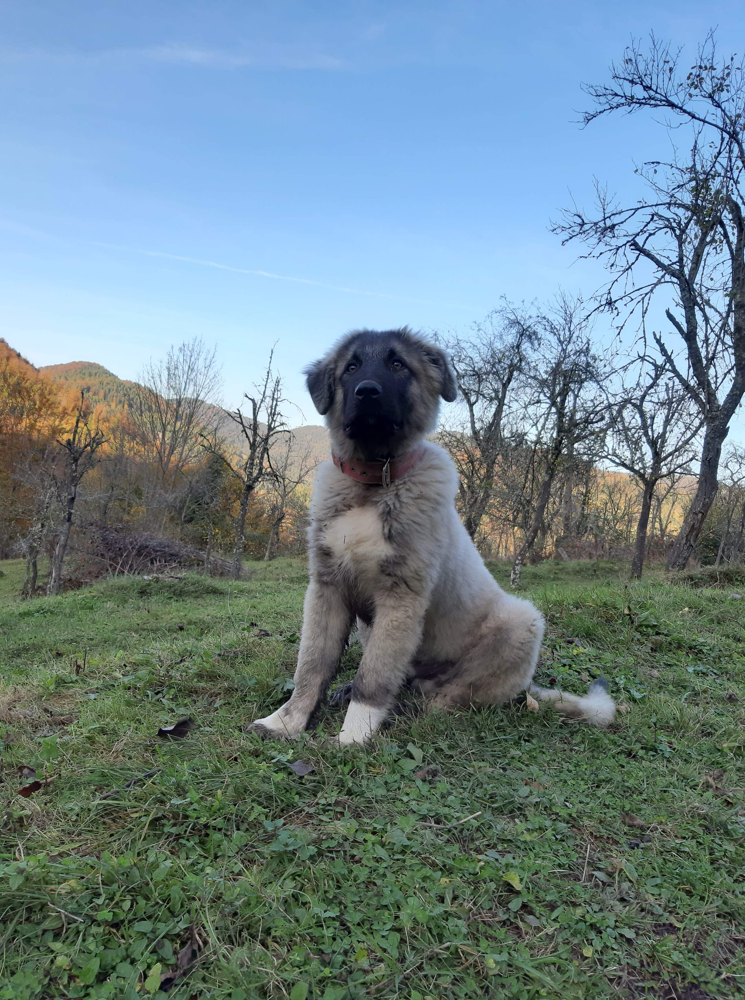

Informaciono komunikacione tehnologije
Sajt
IKT
Unosenje Vaseg psa u bazu za vakcinisanje

Informacije o Vasem psu
Ime psa:
Rasa psa:
Pol: Muski
Zenski
Starost:
0
1
2
3
4
5
6
7
8
9
10
11
12
Vise
Informacije o rasama:
-Sarplaninac
-Njemacki ovcar
-Staford
-Buldog
-Mops
-Ostale rase